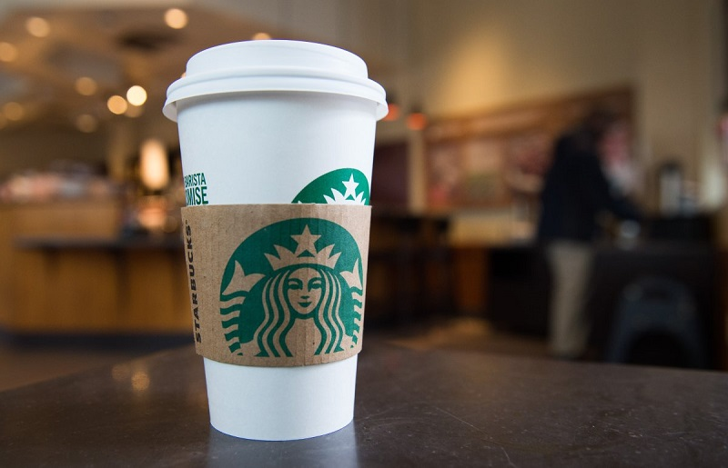
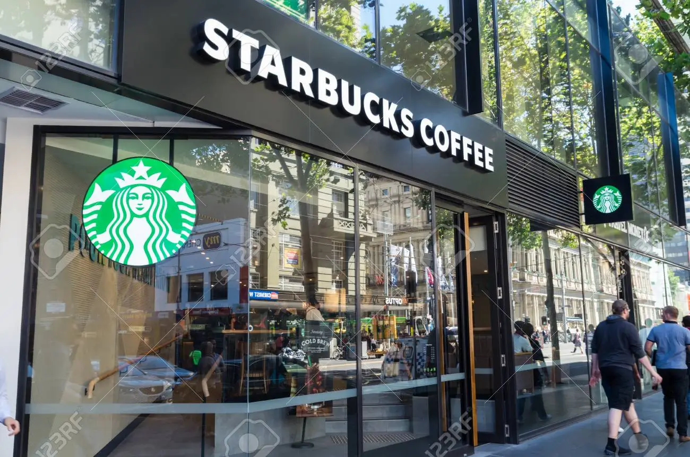
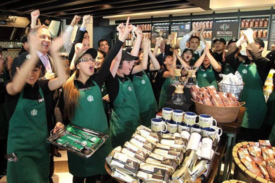

Starbucks - câu chuyện về một thương hiệu...
Cho đến những năm 90 của thể kỷ trước, ngay tại nước Mỹ vẫn chưa ai biết đến thương hiệu cafe Starbucks. Thành công của Starbucks sau này là một câu chuyện thương hiệu đầy cảm hứng.

Starbucks – “kể chuyện” để xây dựng thương hiệu từ trái tim
Gần 20 năm sau, Starbucks đã nằm trong top 100 thương hiệu giá trị nhất thế giới theo xếp hạng năm 2011 của cả hai tổ chức uy tính nhất toàn cầu về xếp hạng thương hiệu hàng năm là Interbrand và Millward Brown.
Có phép màu gì đằng sau bước nhảy vọt thần kỳ này? nếu bạn có may mắn đọc được cuốn sách “Dốc hết trái tim” (nguyên văn “Pour your heart into it”) của Howard Schult – Chairman của Starbucks, bạn sẽ hiểu tại sao Starbucks đạt được vị thế như ngày hôm nay.
Đối với tôi, có rất nhiều giá trị và cảm xúc đọng lại từ những trang sách này. Đây là cuốn hồi ký của một tài năng xuất sắc về quản trị chiến lược nhưng bạn sẽ có cảm giác như đọc một cuốn tiều thuyết hấp dẫn từ trang sách đầu tiên cho đến dòng kết cuối cùng.
Có quá nhiều điều để kể về cuốn sách này với nhiều cảm xúc muốn chia sẻ. Chỉ riêng về góc độ quản trị về định vị thương hiệu và khác biệt hóa thương hiệu không thôi, Starbucks đã là một bài học kinh điển đáng để các marketer đưa vào làm sách gối đầu giường.
Starbucks là kẻ đến sau vĩ đại.

Starbucks – “kể chuyện” để xây dựng thương hiệu từ trái tim
Starbucks thành lập từ năm 1971 nhưng đến năm 1984 nó vẫn chỉ là một cái tên vô danh tại nước Mỹ với chỉ vỏn vẹn 5 cửa hàng cà phê tại thành phố Seattle.
Nhưng chỉ một thời gian ngắn sau khi Howard Schultz gia nhập Starbucks, vào đầu những năm 1990, Starbucks đã có mặt trên hầu hết các thành phố lớn của Mỹ.
Bắt nguồn từ cảm hứng cafe espresso của Italy, ông đã tạo nên một thương hiệu cafe với chất lượng tuyệt hảo và trên hết, một phong cách thưởng thức cafe mà trước đó người Mỹ chưa bao giờ được biêt tới (trước đó người Mỹ chỉ biết đến cafe là một thức “uống” chứ không phải để “thưởng thức” như loại Espresso mà Starbucks giới thiệu).
Bắt chước thành công vang dội này của Starbucks, rất rất nhiều đối thủ cạnh tranh đã nhảy vào cuộc nhưng tất cả đều thất bại.
Đơn giản, Starbucks là người đầu tiên tạo ra một phong cách thưởng thức cà phê mới (trong xây dựng thương hiệu gọi là “phạm vi tham chiếu” hay “frame of references”) và trong tiềm thức của khách hàng, khó có thương hiệu đi sau nào có thể thay thế. Starbucks đâu phải là thương hiệu cà phê đầu tiên có mặt trên thị trường đâu. Nhưng “Nàng tiên cá” là kẻ “đến sau vĩ đại” vì đã thôi miên được sự đam mê của hàng triệu khách hàng, không chỉ tại nước Mỹ, mà trên nhiều ngõ ngách của cả những nước thứ ba.
Đam mê và sáng tạo tạo nên những điều khác biệt đồng thời giúp Starbucks xây dựng một câu chuyện thương hiệu đầy cảm hứng.

Starbucks – “kể chuyện” để xây dựng thương hiệu từ trái tim
Thời gian đầu mới ra mắt, Starbucks thu hút khách hàng bằng cách cung cấp một loại cà phê espresso với chất lượng vượt trội (Starbucks chỉ thu mua loại cà phê arabia tốt nhất, bí quyết rang cà phê độc đáo kết hợp pha cà phê với hơi sữa). Người Mỹ chưa bao giờ được thưởng thức một loại cà phê nào tuyệt như vậy!
Theo triết lý của Stabucks, mỗi nhân viên là một đại sứ thương hiệu truyền cảm hứng cho khách hàng
Một trong những bí quyết để khác biệt hóa thương hiệu là trở thành người sở hữu một thuộc tính nổi bật của sản phẩm. Starbucks đã có được điều này nhưng nếu chỉ dừng lại ở đây, có lẽ Starbucks chưa chắc có được vị thế như hiện nay. Nói đến Starbucks khách hàng không chỉ biết đến đó là loại cà phê tuyệt hảo, họ nghĩ ngay đến ba chữ “nơi thứ ba” (“nhà” và “văn phòng làm việc” là nơi “thứ nhất” và “thứ hai”).
Đó mới là điều đáng giá nhất. Theo thời gian, đối thủ có thể đuổi kịp Starbucks về chất lượng nhưng mãi mãi họ không thể lấy đi ba chữ “nơi thứ ba” mà Starbuck đã sở hữu.sBạn sẽ không ngạc nhiên về điều này nếu đã từng biết đến “quy luật về nhận thức” (“the Law of the Mind”) trong xây dựng thương hiệu: hãy là thương hiệu đầu tiên trong tâm trí của khách hàng.